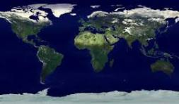

2) შექმენით ისეთი ვებსაიტი, თემა - რაზეც გინდათ იმაზე, პირობაა გამოიყენოთ ყველა თეგი რაც ვისწავლეთ
Document
დედამიწა
დედამიწა შედგება 7 კონტინენტისაგან.

კონტინენტები:
აზია
ევროპა
აფრიკა
ჩრდ.ამერიკა
სამხ.ამერიკა
ანტარქტიკა
ყველა კონტინენტი გამორჩეულია
აზია
არის ყველაზე დიდი კონტინენტი — იკავებს დედამიწის ხმელეთის თითქმის 30%-ს.
აქ ცხოვრობს მსოფლიოს მოსახლეობის 60% — ანუ ყოველ 10 ადამიანიდან 6 აზიელია!
მსოფლიოში ყველაზე მაღალი წერტილიც აქაა — ევერესტის მთა (8848 მ).
არის ყველაზე ცხელი კონტინენტი.
აქაა საჰარის უდაბნო, რომელიც თითქმის ისეთივე დიდია, როგორიც მთლიანი აშშ.
აქ მდებარეობს ამაზონის ტყე, რომელიც აწარმოებს დედამიწის ჟანგბადის 20%-ს 🌳
ასევე აქაა ანდების მთები, ყველაზე გრძელი მთათა სისტემა მსოფლიოში (~7000 კმ).
ერთადერთი კონტინენტია, სადაც არცერთი უდაბნო არ არის.
მოსახლეობის სიხშირით მხოლოდ აზიას ჩამორჩება.
ევროპის ყველაზე პატარა ქვეყანა — ვატიკანი — მხოლოდ 0.44 კვ.კმ-ია.
ერთდროულად ყველა კლიმატი:
ჩრდილოეთ ამერიკაში არის ყველა კლიმატი — არქტიკული ყინვებიდან (ალასკა) ტროპიკულ ჯუნგლებამდე (მექსიკა).
ავსტრალია
ერთადერთი კონტინენტია, რომელიც ერთი ქვეყნისგან შედგება 🇦🇺
არის უდიდესი ყინულის კონტინენტი — მისი 98% დაფარულია ყინულით ❄️
მიუხედავად იმისა, რომ ყინულია, ის უდაბნოა — ძალიან მშრალი ჰაერით